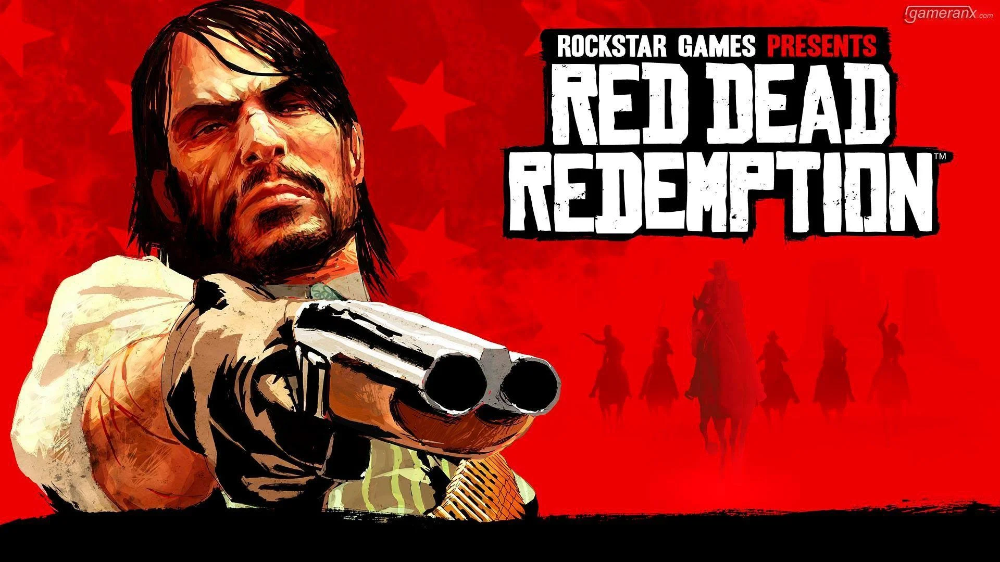
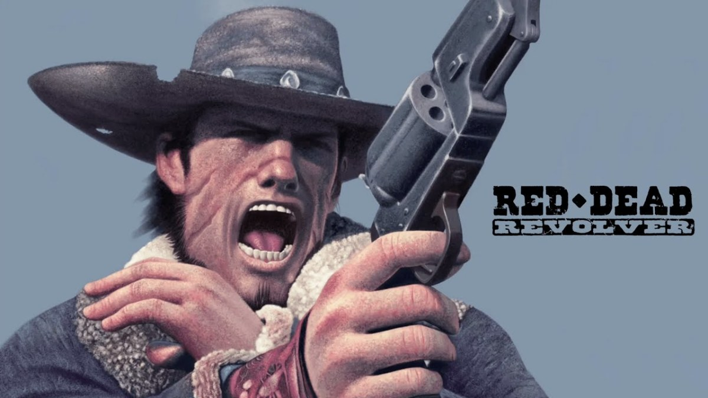

Contactanos +56 9 5376 3502
Red Dead Redemption 2 posee varios personajes destacables dentro de los cuales se encuentran los siguientes:
Arthur Morgan, nacido alrededor de 1863, es el protagonista central de Red Dead Redemption 2. Criado por Dutch van der Linde y Hosea Matthews, Arthur es un forajido leal, valiente y temerario

John Marston, alrededor de 1873, formó parte de la conocida banda de Dutch van der Linde junto a Hosea Matthews y Arthur Morgan. Es como un hermano para arthur debido a que se criaron juntos.
Dutch es el lider de la banda y mentor de varios miemobros de la banda tales como: arthur morgan y john marston. Dutch es un lider nato y bastante carismatico, pero tambien calculador y muy inteligente

Micah bell se unio a la banda cuando antes de un atraco que salio mal, lleva una relacion tensa con ciertos miebros debido a su personalida impredecible, salvaje y sin escrupulos. el vive por y para la accion
Red Dead Redemption 2 es un videojuego que destaca por su historia, jugabilidad y apartado grafico, ademas de contar con un mundo abierto lleno de vida y actividades por hacer, lo que lo convierte en una experiencia unica y que vale la pena vivir